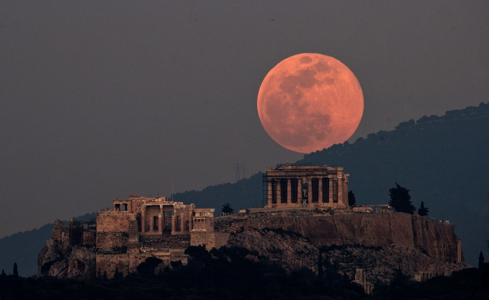
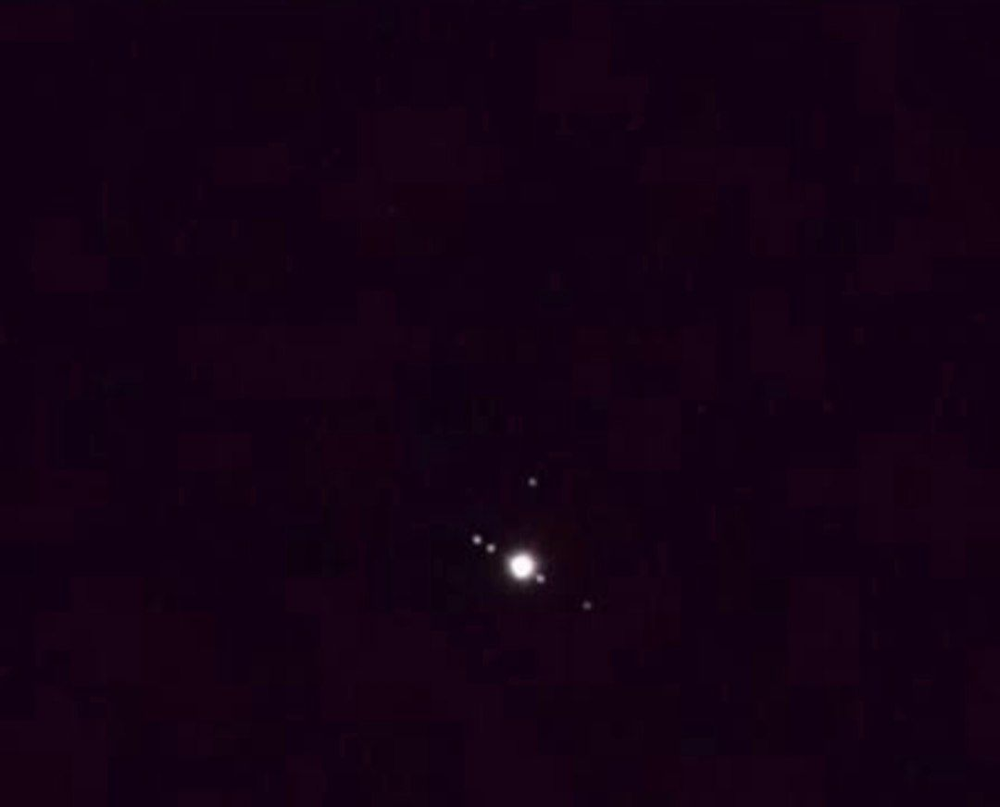

گالری جامع تصاویر نجومی
مجموعه کامل عکسهای ثبتشده توسط عکاسان و اعضای انجمن نجوم نوا.

سحابی
سحابی در آسمان تاریک
ثبت شده در شب رصد کویر مرنجاب با نوردهی ۳۰ ثانیهای و دوربین DSLR.

ماه
طلوع ماه کامل
تصویر طلوع ماه کامل بر فراز دشت رصدگاه انجمن در یک شب صاف پاییزی.

راه شیری
کمان راه شیری در کویر
ثبت سراسرنمای (پانوراما) قوس کهکشان راه شیری در یکی از تاریکترین نقاط ایران.

سیارات
مشتری و قمرهای گالیلهای
نمای مشتری به همراه چهار قمر اصلی آن که از پشت تلسکوپ ۸ اینچ ثبت شده است.

کهکشان
کهکشان آندرومدا (M31)
همسایه ژرف کیهانی ما در فاصله ۲.۵ میلیون سال نوری. حاصل ترکیب ۲۰ فریم نوردهی.

پدیده آسمانی
شفق پیش از آغاز رصد
نمایی زیبا از رنگهای شامگاهی دشت پیش از تاریک شدن کامل آسمان و شروع برنامههای رصد.